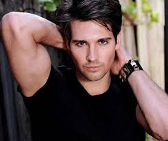

James David Maslow Burge ♥
Maslow nació en la ciudad de Nueva York, pero creció en La Jolla, California.3 Fue criado bajo la religión judaica, de hecho, en una entrevista declaró que su día festivo favorito es Janucá.4 A la edad de seis años inició lecciones de canto después de ser inscrito por sus padres en el coro de niños de San Diego.5 Estudió en las escuelas primarias La Jolla y Torrey Pines, posteriormente en la secundaria Muirlands y en San Diego School of Creative and Performing Arts.6 A los diez años interpretó un pequeño papel en la ópera La bohème, en una versión producida por la Ópera de San Diego.6 7 También asistió a un campamento de teatro en La Jolla Playhouse que se encuentra en el campus de la Universidad de California en San Diego. A los 14 años obtuvo su primer agente artístico e interpretó a Marius Pontmercy en una producción teatral de Les Miserables.6 Tras abandonar la San Diego School of Creative and Performing Arts, cuando cursaba décimo grado, ingresó a la escuela Coronado School of the Arts (CoSA, por sus siglas en inglés), de la cual se graduó en 2007 del departamento de teatro musical.
Big Time Rush es una banda de pop que se formó en 2009 y está conformada por Kendall Schmidt, Carlos Pena, Jr. y Logan Henderson.10
En 2007 Nickelodeon realizó un casting de actores para una comedia de situación (sitcom). Maslow envió su audición grabada y recibió el rol de James Diamond dos años después.11 Junto a sus compañeros de banda ha grabado varias canciones como «Big Time Rush» —tema principal de la serie—, «Any Kind Of Guy», «City Is Ours», «Halfway There», «Famous», «Shot in the Dark», «Stuck», etc. En octubre de 2011 se publicó un álbum titulado B.T.R. el cual incluye las canciones de la primera temporada de la serie y otros temas.12
El 21 de noviembre de 2011, la banda lanzó su segundo álbum llamado "Elevate", que vendió 70, 000 copias en su primera semana. Maslow y su compañeros de la banda co escribieron 8 de las 12 canciones. Maslow escribió "Elevate", "Love Me Love Me" y el primer sencillo del álbum, "Music Sounds Better With U". La versión británica del álbum incluye una canción extra llamada "Epic", que también ayudó a escribir. Maslow y Big Time Rush tienen un nuevo álbum llamado 24/Seven que fue lanzado en junio de 2013. La banda promocionará el álbum con la gira compartida con Victoria Justice llamado Summer Break Tour.13 que comenzó el 21 de junio.
.jpg)
.jpg)